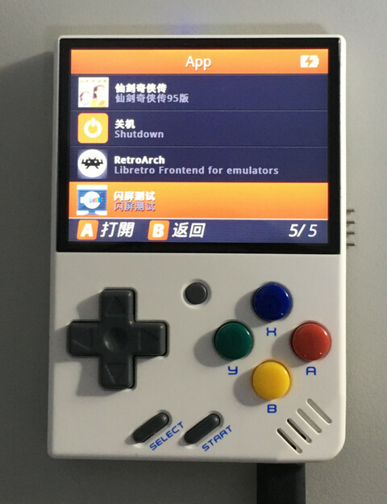
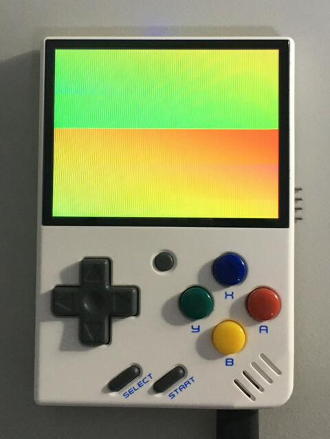
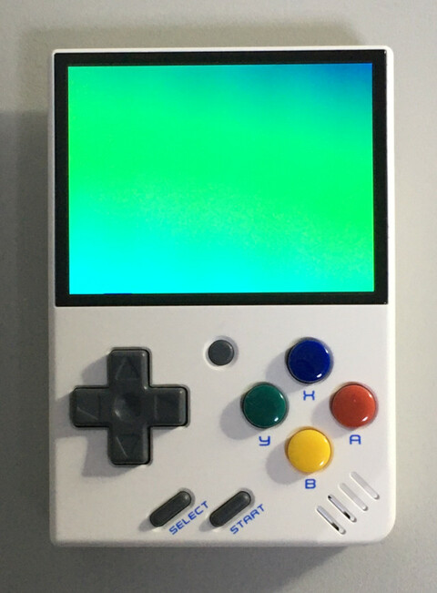

Steward
分享是一種喜悅、更是一種幸福
掌機 - Miyoo Mini - C/C++ - 閃屏測試
main.c
#include <stdio.h>
#include <stdlib.h>
#include <SDL.h>
int main(int argc, char **argv)
{
uint32_t cnt = 0;
SDL_Surface* screen = NULL;
uint32_t col[] = {0xf800, 0x7e0, 0x001f};
SDL_Init(SDL_INIT_VIDEO);
screen = SDL_SetVideoMode(640, 480, 16, SDL_SWSURFACE | SDL_DOUBLEBUF);
while (cnt < 600) {
cnt += 1;
SDL_FillRect(screen, &screen->clip_rect, col[cnt % 3]);
SDL_Flip(screen);
SDL_Delay(1000 / 60);
}
SDL_Quit();
return 0;
}
編譯指令
$ arm-linux-gnueabihf-gcc main.c -o test -I/usr/include/SDL libSDL-1.2.so.0.11.4 libmi_common.so libmi_sys.so libmi_disp.so libmi_panel.so libmi_gfx.so libmi_divp.so libmi_ao.so libshmvar.so
執行閃屏測試

測試後，可以發現有閃屏問題

司徒後來找了一下，發現顯示驅動並沒有同步PAN_DISPLAY，導致SDL_Flip會有閃屏問題，不過，可以自己使用FBIO_WAITFORVSYNC控制就可以解決閃屏問題
#include <stdio.h>
#include <stdlib.h>
#include <stdio.h>
#include <stdlib.h>
#include <sys/types.h>
#include <sys/stat.h>
#include <fcntl.h>
#include <unistd.h>
#include <stdint.h>
#include <sys/ioctl.h>
#include <sys/types.h>
#include <sys/mman.h>
#include <string.h>
#include <linux/fb.h>
#include <SDL.h>
int main(int argc, char **argv)
{
int zero = 0;
uint32_t cnt = 0;
SDL_Surface* screen = NULL;
uint32_t col[] = {0xff0000, 0xff00, 0xff};
int fd = open("/dev/fb0", O_RDWR);
SDL_Init(SDL_INIT_VIDEO);
screen = SDL_SetVideoMode(640, 480, 32, SDL_SWSURFACE | SDL_DOUBLEBUF);
while (cnt < 600) {
cnt += 1;
SDL_FillRect(screen, &screen->clip_rect, col[cnt % 3]);
ioctl(fd, FBIO_WAITFORVSYNC, &zero);
SDL_Flip(screen);
}
SDL_Quit();
close(fd);
return 0;
}
沒有閃屏問題
